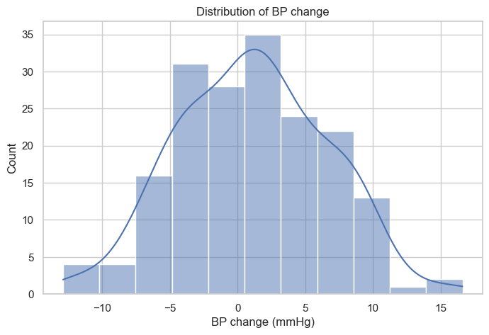
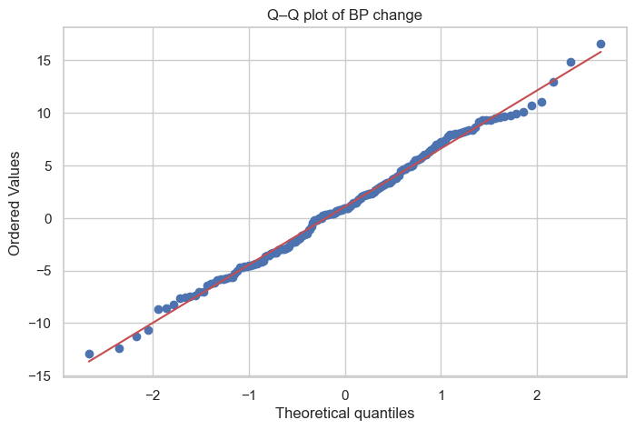

Data Handling and Basic Analysis (Part 2 Nutrition)
Version 0.0.1
This workbook introduces the foundations of data handling, using a small synthetic RCT dataset that mimics the Part 2 practicals:
Blood pressure change after different amounts of coffee
Blood glucose after different cereals
Appetite VAS after different test foods
We simulate data (rather than use student data), including age and sex.
By the end of the workbook, you should be able to:
Generate and inspect data
Identify missing or impossible values
Explore distributions
Decide whether parametric or non-parametric tests are appropriate
Understand randomness of p-values (including why 0.05 is arbitrary)
Compare intervention vs control
Perform one-way comparisons with multiple intervention arms
Present results graphically
Run the first code cell to configure the environment and load helper functions.
# ============================================================# FB2NRP bootstrap cell (works both locally and in Colab)## What this cell does:# - Locally: expects you to open the notebook from *inside*# the fb2nrp-datahandling repository (e.g. repo/notebooks).# It walks up the directory tree to find scripts/bootstrap.py.# - In Colab: if the repo is not found, it clones it from GitHub# into /content/fb2nrp-datahandling.# - Loads and runs scripts/bootstrap.py.# - Generates a synthetic dataset and makes it available as `df`.# ============================================================import osimport sysimport pathlibimport subprocessimport importlib.utilREPO_URL ="https://github.com/ggkuhnle/fb2nrp-datahandling.git"REPO_DIR ="fb2nrp-datahandling"# ------------------------------------------------------------# 1. Detect environment and repo root# ------------------------------------------------------------def in_colab() ->bool:try:import google.colab # type: ignore # noqa: F401returnTrueexceptImportError:returnFalse# Make sure the process cwd is validtry: cwd = pathlib.Path.cwd()exceptFileNotFoundError:# If this happens locally, the safest is to bail out with# a clear message rather than guess.raiseRuntimeError("Current working directory no longer exists.\n""Please restart the kernel from inside the fb2nrp-datahandling repository ""(e.g. open the notebook from repo/notebooks and try again)." )repo_root =Nonefor parent in [cwd] +list(cwd.parents):if (parent /"scripts"/"bootstrap.py").is_file(): repo_root = parentbreakif repo_root isnotNone:# We are somewhere inside an existing clone (local or Colab) os.chdir(repo_root) repo_root = pathlib.Path.cwd()print(f"Repository root detected at: {repo_root}")else:# Repo not found by walking upif in_colab():# In Colab: clone into /content/fb2nrp-datahandling base_dir = pathlib.Path("/content") os.chdir(base_dir) repo_root = base_dir / REPO_DIRifnot repo_root.is_dir():print(f"Cloning repository from {REPO_URL} into {repo_root} ...") subprocess.run(["git", "clone", REPO_URL, str(repo_root)], check=True)else:print(f"Using existing repository at {repo_root}") os.chdir(repo_root) repo_root = pathlib.Path.cwd()print(f"Repository root set to: {repo_root}")else:# Local but not inside the repo: fail with a clear messageraiseRuntimeError("Could not find fb2nrp-datahandling repository root.\n""Please make sure you open this notebook from inside the ""`fb2nrp-datahandling` repository (e.g. repo/notebooks) and ""then re-run this cell." )# ------------------------------------------------------------# 2. Load scripts/bootstrap.py as a module and call init()# ------------------------------------------------------------bootstrap_path = repo_root /"scripts"/"bootstrap.py"ifnot bootstrap_path.is_file():raiseFileNotFoundError(f"Could not find {bootstrap_path}. ""Please check that the fb2nrp-datahandling repository structure is intact." )spec = importlib.util.spec_from_file_location("fb2nrp_bootstrap", bootstrap_path)bootstrap = importlib.util.module_from_spec(spec)sys.modules["fb2nrp_bootstrap"] = bootstrapspec.loader.exec_module(bootstrap)CTX = bootstrap.init()for name in ["REPO_NAME", "REPO_URL"]:ifhasattr(bootstrap, name):globals()[name] =getattr(bootstrap, name)print("Bootstrap completed successfully.")print("The main synthetic dataset is available as the variable `df`.")print("The context object is available as `CTX`.")
Repository root detected at: /Users/gunter/Documents/fb2nrp-datahandling
Bootstrap completed successfully.
The main synthetic dataset is available as the variable `df`.
The context object is available as `CTX`.
1 1. Generate the synthetic dataset
We now generate a synthetic dataset that mimics the Part 2 practicals.
Coffee intervention with three arms: low, medium, high.
Cereal intervention with three arms: bran, cornflakes, muesli.
Test foods for appetite VAS: apple, biscuit, yoghurt.
We also include age and sex for each participant.
import matplotlib as plt
# ============================================================# Setup: scientific Python libraries and plotting style## This cell:# - Loads the core scientific Python stack.# - Sets a clean and readable plotting theme.# - Assumes the bootstrap cell has already created the DataFrame `df`# and the context object `CTX`.# ============================================================# Data handling and numerical computingimport numpy as np # numerical arrays, random numbers, simple mathsimport pandas as pd # tabular data (DataFrames)# Plottingimport matplotlib.pyplot as plt # general plottingimport seaborn as sns # nicer statistical plots built on matplotlib# Statistical testsimport scipy.stats as st # t-tests, ANOVA, non-parametric tests, etc.# Display options (optional but helpful in teaching)pd.set_option("display.max_rows", 20)pd.set_option("display.max_columns", 20)# Plot stylesns.set_theme(style="whitegrid")plt.rcParams["figure.figsize"] = (8, 5)
from scripts.helpers import simulate_practical_data# Generate the datasetdf = simulate_practical_data(seed=11088)# Display the first few rowsdf.head()
sex
age
coffee_arm
cereal_arm
food_arm
bp_change
glucose
appetite_vas
0
M
23.0
medium
muesli
biscuit
-2.277014
3.893446
49.697382
1
F
23.0
low
muesli
apple
-7.477945
5.099903
64.221224
2
F
18.0
low
muesli
yoghurt
-5.792875
5.137336
61.463311
3
F
21.0
high
bran
apple
6.757192
5.337392
41.922871
4
M
27.0
medium
muesli
biscuit
8.056317
4.607127
69.574358
2 2. Inspecting the data
Before any analysis, we need to understand the structure of the dataset and check for obvious problems:
# Count of missing values for each variabledf.isna().sum()
sex 0
age 0
coffee_arm 0
cereal_arm 0
food_arm 0
bp_change 0
glucose 0
appetite_vas 0
dtype: int64
# Numerical summary (range, mean, quartiles) for numeric variablesdf.describe()
age
bp_change
glucose
appetite_vas
count
180.000000
180.000000
180.000000
180.000000
mean
20.888889
1.079185
5.176204
57.766216
std
2.134811
5.486477
0.657627
15.475763
min
16.000000
-12.901517
3.572421
22.274419
25%
19.000000
-2.968645
4.761198
46.871435
50%
21.000000
0.931915
5.122706
57.340160
75%
22.000000
4.907193
5.575937
67.190806
max
27.000000
16.614710
6.866672
100.000000
3 3. Exploring distributions
Choice of statistical test depends strongly on the underlying distribution.
Here we:
Plot histograms and density curves.
Inspect normality with a Q–Q plot.
Compare distributions across intervention arms using boxplots.
# Histogram and density for blood pressure changesns.histplot(df["bp_change"], kde=True)plt.title("Distribution of BP change")plt.xlabel("BP change (mmHg)")plt.ylabel("Count")plt.show()

3.1 What is a Q–Q Plot?
A Quantile–Quantile (Q–Q) plot is a simple but powerful way to check
whether a variable follows a normal distribution.
The idea is:
Every dataset has its own quantiles (e.g. the 10th, 50th, 90th percentile).
A normal distribution also has well-defined quantiles.
A Q–Q plot compares the quantiles of your data with the quantiles of a perfect normal distribution.
If the data are approximately normal, the points in the Q–Q plot:
fall roughly on a straight line
especially in the middle of the distribution
Deviations often mean:
S-shape → skewed distribution
heavy tails (points far above/below the line at the extremes)
outliers (isolated points far from the pattern)
Q–Q plots are more sensitive than histograms for detecting
non-normality, especially in small samples.
# Q–Q plot to assess normality of BP changest.probplot(df["bp_change"], dist="norm", plot=plt)plt.title("Q–Q plot of BP change")plt.show()

# Boxplot of BP change by coffee armsns.boxplot(data=df, x="coffee_arm", y="bp_change")plt.title("BP change by coffee intervention arm")plt.xlabel("Coffee arm")plt.ylabel("BP change (mmHg)")plt.show()
4 4. Comparing two arms: parametric and non-parametric tests
We now compare BP change between two coffee arms (e.g. low vs high).
Non-parametric test: Mann–Whitney U test (uses ranks, does not assume normality).
We also start using a slightly unusual significance threshold: α = 0.0314 (to emphasise that 0.05 is an arbitrary convention).
# Select two arms for comparison: low vs high coffeebp_low = df[df["coffee_arm"] =="low"]["bp_change"]bp_high = df[df["coffee_arm"] =="high"]["bp_change"]# Independent-samples t-testt_stat, p_t = st.ttest_ind(bp_low, bp_high, equal_var=False)# Mann–Whitney U test (non-parametric)u_stat, p_u = st.mannwhitneyu(bp_low, bp_high, alternative="two-sided")alpha =0.0314print(f"t-test: t = {t_stat:.3f}, p = {p_t:.4f}")print(f"Mann–Whitney: U = {u_stat:.1f}, p = {p_u:.4f}")print(f"Using alpha = {alpha}")
Question for you
Do the conclusions from the t-test and Mann–Whitney test agree?
How would the conclusion change if we used α = 0.05 instead of 0.0314?
5 5. Comparing multiple arms
Now consider blood glucose across different cereal arms:
bran
cornflakes
muesli
We can use:
ANOVA (parametric, assumes approximate normality and equal variances).
Kruskal–Wallis test (non-parametric, based on ranks).
# Prepare lists of glucose values by cereal armgroups_glucose = [group["glucose"].values for _, group in df.groupby("cereal_arm")]# One-way ANOVAf_stat, p_anova = st.f_oneway(*groups_glucose)# Kruskal–Wallis testh_stat, p_kw = st.kruskal(*groups_glucose)print("One-way ANOVA:")print(f" F = {f_stat:.3f}, p = {p_anova:.4f}")print("Kruskal–Wallis test:")print(f" H = {h_stat:.3f}, p = {p_kw:.4f}")
# Visualise glucose values by cereal armsns.boxplot(data=df, x="cereal_arm", y="glucose")plt.title("Blood glucose by cereal arm")plt.xlabel("Cereal arm")plt.ylabel("Glucose (arbitrary units)")plt.show()
6 6. Why p = 0.05 is not a magical threshold
In many papers, p < 0.05 is treated as “significant” and p ≥ 0.05 as “not significant”.
Here we simulate 10 000 RCTs with no true difference between two groups. For each simulated experiment, we:
Draw two random samples from the same normal distribution.
Run an independent-samples t-test.
Store the resulting p-value.
If there is really no effect, p-values should be uniformly distributed between 0 and 1, and about 5% of them should still be below 0.05 just by chance.
# Simulate 10 000 null experimentsrng = np.random.default_rng(11088)p_values = []n_per_group =30n_sim =10000for _ inrange(n_sim): x = rng.normal(0, 1, n_per_group) y = rng.normal(0, 1, n_per_group) _, p = st.ttest_ind(x, y, equal_var=False) p_values.append(p)# Plot the distribution of p-valuessns.histplot(p_values, bins=30)plt.axvline(0.05, color="red", linestyle="--", label="0.05")plt.title("Distribution of p-values when there is NO true effect")plt.xlabel("p-value")plt.ylabel("Count")plt.legend()plt.show()
Reflection
Roughly what proportion of p-values fall below 0.05?
What does this tell you about using p < 0.05 as a hard decision rule?
How might scientific conclusions be distorted if we only publish or believe “significant” findings?
7 7. Presenting results graphically
Well-designed figures often communicate results more clearly than tables alone.
For approximately normal outcomes, we can show means with confidence intervals. For skewed outcomes (such as VAS scores), boxplots or violin plots can be more informative.
# Example: mean BP change with 95% confidence intervals by coffee armsns.pointplot(data=df, x="coffee_arm", y="bp_change", ci=95, dodge=True)plt.title("Mean BP change with 95% CI by coffee arm")plt.xlabel("Coffee arm")plt.ylabel("BP change (mmHg)")plt.show()
# Example: appetite VAS by test food (distribution often skewed)sns.boxplot(data=df, x="food_arm", y="appetite_vas")plt.title("Appetite VAS by test food")plt.xlabel("Test food")plt.ylabel("Appetite VAS (0–100)")plt.show()
8 8. Exercise
Use the tools from this workbook to complete the following tasks:
For each outcome (bp_change, glucose, appetite_vas), explore its distribution (histograms, Q–Q plots, boxplots).
Decide whether a parametric or non-parametric test is more appropriate for comparing intervention groups.
Perform the comparison and report:
The test used and why.
The test statistic and p-value.
Your conclusion using α = 0.0314.
Create one clear figure that summarises the main result for one of the interventions (coffee, cereal, or test food).